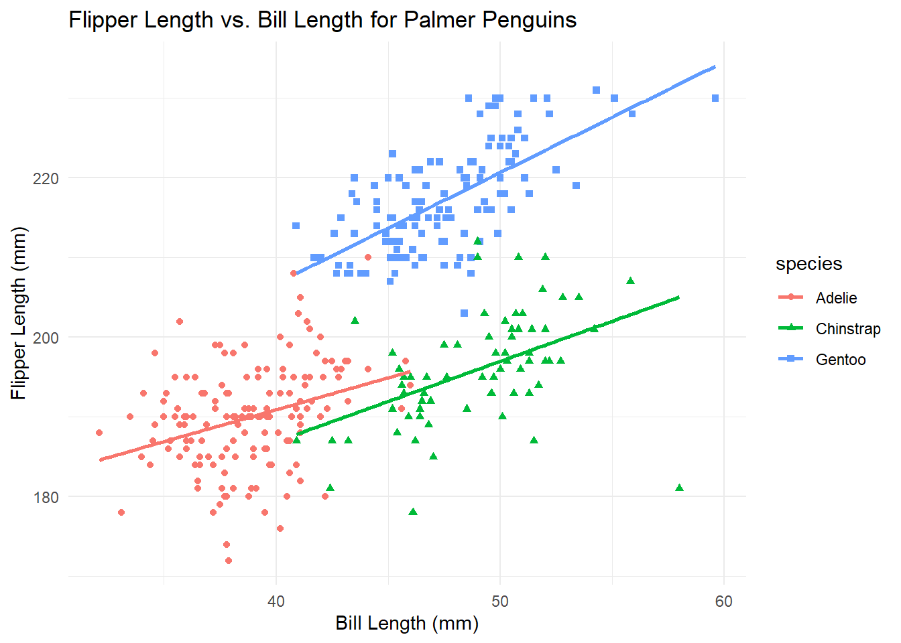
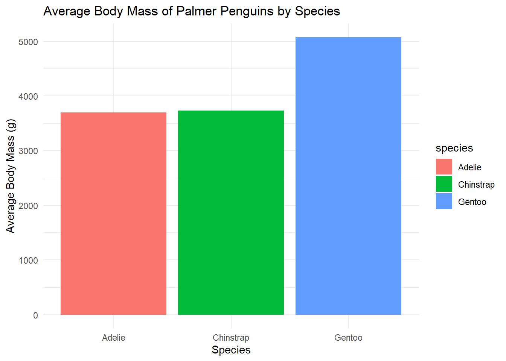
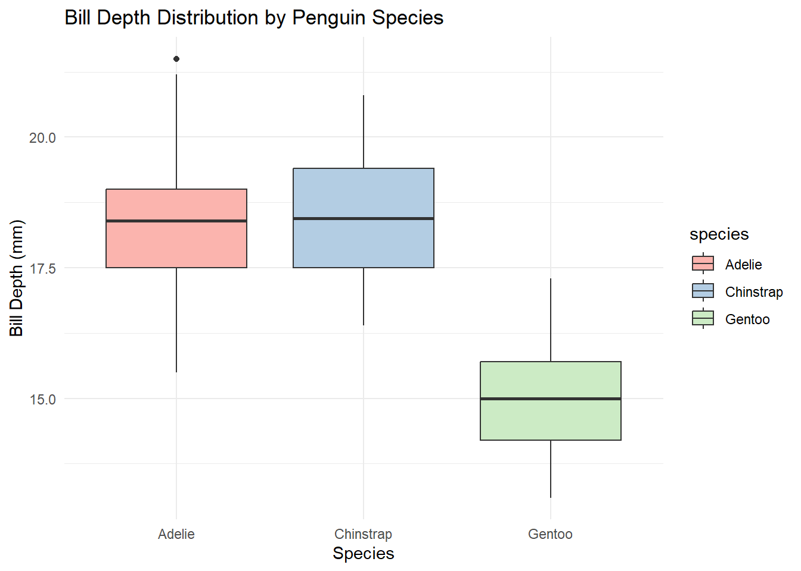

library(palmerpenguins)Warning: package 'palmerpenguins' was built under R version 4.2.3Any notes / paragraphs relevant to what it is that you want to talk about
Any text for your subheading can go here
Any text for the sub-subheading would go here, and so on…
library(palmerpenguins)Warning: package 'palmerpenguins' was built under R version 4.2.3The ggplot code provided creates a scatter plot using the Palmer Penguins dataset. This plot visualizes the relationship between two key measurements of the penguins: bill length (in millimeters) and flipper length (also in millimeters). Each point on the plot represents an individual penguin, with the x-axis showing the bill length and the y-axis showing the flipper length.
The aes function in the ggplot code specifies that the plot should use bill length for the x-axis and flipper length for the y-axis. Additionally, it defines the shape and color of the points based on the species of the penguin, making it easy to distinguish between different species visually.
The geom_point() function adds the actual points to the plot, representing the data points for each penguin. The geom_smooth(method="lm", se=FALSE) adds a linear regression line for each species, showing the general trend or relationship between bill length and flipper length for each species without including the standard error shading.
The labs function adds informative labels and titles to the plot. The title “Flipper Length vs. Bill Length for Palmer Penguins” clearly indicates what the plot is depicting. The x and y-axis labels are descriptive, informing the viewer exactly what each axis represents.
Finally, theme_minimal() is used to give the plot a clean and minimalistic aesthetic, which helps in focusing the viewer’s attention on the data points and the trends they represent, rather than on any decorative elements of the chart.

This ggplot code creates a bar chart visualizing the average body mass of different species of Palmer Penguins. The plot aims to compare the average body mass (in grams) across various penguin species in the Palmer Penguins dataset.
The aes function within ggplot sets the aesthetics for the plot. Here, it specifies the x-axis to represent the different penguin species and the y-axis to represent their body mass in grams. The fill=species attribute within aes means that each bar will be colored differently based on the species, making it visually easier to distinguish between them.
The geom_bar(stat="summary", fun="mean") function is crucial in this plot. It tells ggplot to create a bar chart where each bar represents the average (mean) body mass for each species. This is specified by stat="summary" and fun="mean". Instead of counting occurrences, which is the default for geom_bar, it calculates the mean body mass for each species.
The labs function adds labels and a title to the plot for better understanding. The title “Average Body Mass of Palmer Penguins by Species” clearly indicates the main focus of the plot. The x-axis is labeled “Species”, and the y-axis is labeled “Average Body Mass (g)”, indicating what each axis represents.
Lastly, theme_minimal() is used to apply a minimalistic theme to the plot. This theme choice enhances readability and focuses attention on the data by removing unnecessary visual elements.

The {width="638"} syntax is used to embed an image (penguins.png) into the document. This syntax tells the Markdown processor to display the image stored in the penguins.png file.

The inline R code snippet below is designed to dynamically insert the number of rows in the penguins dataset directly into the text of the document. This approach is particularly useful in dynamic report generation where the dataset might change over time. Instead of manually updating text with the new number of rows, this inline code ensures that the information is always current and accurate with the latest version of the dataset.
There are 344 rows of data.
The HTML and JavaScript code snippet below is a manual approach to creating interactive tabs in a web document. While this method offers a high level of customization and control, it can be complex and time-consuming, especially for those who are new to HTML and JavaScript.
Content for Tab 1.
Content for Tab 2.
Content for Tab 3.
The Quarto method below demonstrates a much simpler and more accessible way to create tabs in a document compared to manually coding with HTML and JavaScript. Quarto allows you to create complex, interactive content using straightforward Markdown syntax, which is significantly easier, especially for those who may not be proficient in web development.
Content for the first tab goes here. You can include text, code, images, etc.
Content for the second tab. This can be different from the first tab.

And so on for as many tabs as you need.